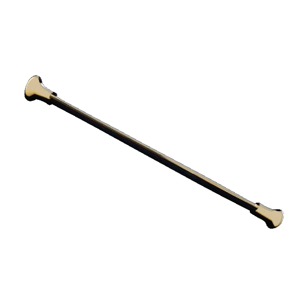
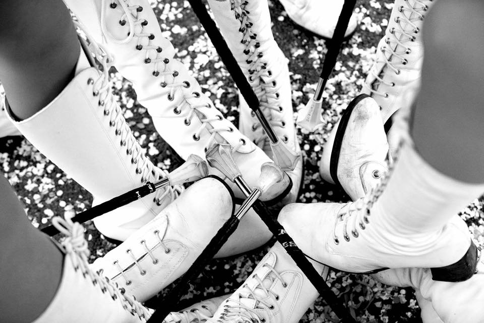
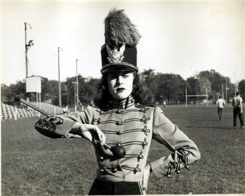
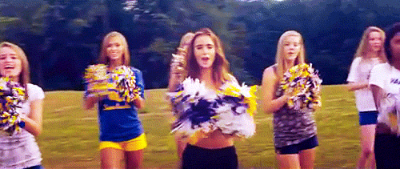

|  | Gli accessori |
|  | La tecnica delle Majorettes viaggia di pari passo con le basi del Twirling.
L'attrezzo principalmente usato dalle majorettes è il bastone, un'asta metallica a sezione circolare di lunghezza variabile tra i 50 e i 75 cm, alle cui estremità vi sono due pomelli in gomma: uno piccolo ("tip") ed uno grande ("ball" o "star").
Vengono in oltre usati pom-pon, bandiere, nastri e tamburelli, anche se negli anni le majorettes sono cambiate grazie ad internet, che ha dato una conoscenza più ampia delle coreografie e delle innovazioni di gruppi provenienti da tutto il mondo. Gli stivali devono essere tutti uguali, specialmente dello stesso colore e forma. Se ci sono dei lacci possono essere uguali alla calzatura o rispecchiare i colori della divisa. |
|  | Il cappello con la piuma rende la majorettes più alta e slanciata.
Non tutti i gruppi completano la divisa con il cappello; se non viene usato si deve fare molta attenzione ai capelli, devono essere raccolti dietro ad un nastro o da un fermaglio con i colori della divisa e uguale per tutte le majorettes. |
|  | I Pompon di solito vengono usati dalle Cheerleaders, raramente le majorettes gli utilizzano.
Molte persone confondono le majorettes o il twirling; Le Cheerleaders nascono negli Stati Uniti e combinono coreografie composte da elementi di ginnastica,danza e acrobazia L'atleta che pratica il cheerleading a livello agonistico è detto cheerleader; l'atleta che esegue coreografie prima, durante e dopo le partite di altre squadre è detto dance breakets. |